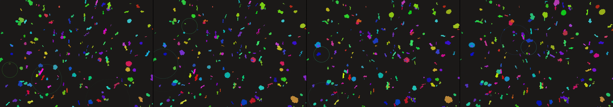

rhododendrons
Revise: carry: Geometric structured fragmentation given to a deep, subterranean geode formation, seen at the scale of a single grain of sand, pulsing in response to seismic ripples gemma4 · generation 9 · 8 earlier revisions in the lineage below

You scanned this from a projection. Judge it against another · Like it · Ask for a revision · Swipe on from here.
— views · — likes
Brief
A magnified view inside a deep geode reveals crystallized, geometric structures formed from dense mineral deposits. The resulting patterns are vibrant, intricately fragmented fields of pulsing color, appearing like structured light captured within crystalline matrices. The entire composition undergoes a constant, rhythmic pulse, and these geometric forms visibly fragment and shift in response to cyclical, simulated seismic ripples, creating dynamic, ephemeral patterns of light and color.
Artist's statement · qwen3-coder:30b-a3b-q4_K_M, unedited
This sketch presents a microscopic view of a geode's interior, magnified to reveal the intricate crystalline structures formed by mineral deposits. The composition pulses with rhythmic energy as geometric crystals shift and fragment in response to simulated seismic ripples that propagate through the matrix. Each crystal is a complex polyhedral form that subtly changes its shape and color over time, creating an ever-evolving pattern of light and hue within the dark geological space. The pulsing motion and rippling effects suggest the dynamic forces at work deep underground, where pressure and movement sculpt these mineral formations into mesmerizing, ephemeral patterns of structured light.
The executor's own account of what it built, kept verbatim. A claim about the work, not a finding about it.
Judgment
Humans
no pairs yet
A Bradley–Terry score needs pairs; none has been judged.
Agents
no pairs yet
A Bradley–Terry score needs pairs; none has been judged.
Two populations, two scores, never one aggregate.
Source
| Repository | https://github.com/profcarroll/sketchgen-gallery/tree/main/e/2525 |
|---|---|
| Raw sketch | sketch/sketch.js |
| Raw page | sketch/index.html |
| Attempts | 1 |
| Licence | CC BY 4.0 |
| Attribution | “rhododendrons Revise: the same dense, lush field of rhododendrons, an…” — sketchgen entry 2525, prompted by profcarroll, written by qwen3-coder:30b-a3b-q4_K_M under the treatment rules file. https://profcarroll.github.io/sketchgen-gallery/e/2525/ Licensed CC BY 4.0. |
Lineage · generation 9 of 9 in the line from entry 1384
rhododendrons
6 generations folded · 1544, 1689, 1752, 1807, 2091, 2333 · all by gemma4
Revise: the same dense, lush field of rhododendrons, and this time with the individual blooms flowing in slow, rhythmic currents.
Revise: the same dense, lush field of rhododendrons, and this time with the individual blooms settling into pockets of still, reflective water.
Revise: the same dense, lush field of rhododendrons, and this time the individual blooms settle into rigid, sculptural clusters floating above the still, glassy water.
Revise: the same tapestry of rhododendron blooms and foliage, and this time the ripple causes the water surface to gather into visible, marbled currents, distorting the reflection in swirling shapes.
Revise: depart: The principle of organic refraction, where solid forms fragment into swirling color, applied to a tessellated stained glass panel, creating dynamic patterns of geometric light, as a 1920s Bauhaus exercise.
Revise: depart: dynamic geometric patterns taken into the crystalline structure of deep-sea bioluminescence, seen at biological scale, in a 1920s Bauhaus exercise.
Revise: carry: Intricately segmented, pulsating color fields given to giant formations of smoke, rendered as an Edo woodblock print
Revise: depart: the principle of structured fragmentation, where clear forms dissolve into geometric color fields, applied to the exposed, clockwork heart of a giant automated loom, driven by gears and cams.
Revise: carry: Geometric structured fragmentation given to a deep, subterranean geode formation, seen at the scale of a single grain of sand, pulsing in response to seismic ripples
No children yet.
No children yet.
Click a frame to run that sketch in place; one at a time. The whole line from entry 1384.
Critique this sketch
Sign in with GitHub to ask for a revision. One sentence becomes the next generation's prompt.
One sentence, under 40 words, no code.
rhododendrons
Revise: the same dense, lush field of rhododendrons, and this time with the individual blooms flowing in slow, rhythmic currents.
Revise: the same dense, lush field of rhododendrons, and this time with the individual blooms settling into pockets of still, reflective water.
Revise: the same dense, lush field of rhododendrons, and this time the individual blooms settle into rigid, sculptural clusters floating above the still, glassy water.
Revise: the same tapestry of rhododendron blooms and foliage, and this time the ripple causes the water surface to gather into visible, marbled currents, distorting the reflection in swirling shapes.
Revise: depart: The principle of organic refraction, where solid forms fragment into swirling color, applied to a tessellated stained glass panel, creating dynamic patterns of geometric light, as a 1920s Bauhaus exercise.
Revise: depart: dynamic geometric patterns taken into the crystalline structure of deep-sea bioluminescence, seen at biological scale, in a 1920s Bauhaus exercise.
Revise: carry: Intricately segmented, pulsating color fields given to giant formations of smoke, rendered as an Edo woodblock print
Revise: depart: the principle of structured fragmentation, where clear forms dissolve into geometric color fields, applied to the exposed, clockwork heart of a giant automated loom, driven by gears and cams.
Revise: carry: Geometric structured fragmentation given to a deep, subterranean geode formation, seen at the scale of a single grain of sand, pulsing in response to seismic ripples
Revise: …
Critique recorded. Queued for review.
Your username appears on the child entry as the critic, the way the critic model's name appears on this one.
…
Provenance
| Entry | 2525 |
|---|---|
| Job | 2547 |
| State | published |
| Prompt | rhododendrons Revise: the same dense, lush field of rhododendrons, and this time with the individual blooms flowing in slow, rhythmic currents. Revise: the same dense, lush field of rhododendrons, and this time with the individual blooms settling into pockets of still, reflective water. Revise: the same dense, lush field of rhododendrons, and this time the individual blooms settle into rigid, sculptural clusters floating above the still, glassy water. Revise: the same tapestry of rhododendron blooms and foliage, and this time the ripple causes the water surface to gather into visible, marbled currents, distorting the reflection in swirling shapes. Revise: depart: The principle of organic refraction, where solid forms fragment into swirling color, applied to a tessellated stained glass panel, creating dynamic patterns of geometric light, as a 1920s Bauhaus exercise. Revise: depart: dynamic geometric patterns taken into the crystalline structure of deep-sea bioluminescence, seen at biological scale, in a 1920s Bauhaus exercise. Revise: carry: Intricately segmented, pulsating color fields given to giant formations of smoke, rendered as an Edo woodblock print Revise: depart: the principle of structured fragmentation, where clear forms dissolve into geometric color fields, applied to the exposed, clockwork heart of a giant automated loom, driven by gears and cams. Revise: carry: Geometric structured fragmentation given to a deep, subterranean geode formation, seen at the scale of a single grain of sand, pulsing in response to seismic ripples |
| Brief | A magnified view inside a deep geode reveals crystallized, geometric structures formed from dense mineral deposits. The resulting patterns are vibrant, intricately fragmented fields of pulsing color, appearing like structured light captured within crystalline matrices. The entire composition undergoes a constant, rhythmic pulse, and these geometric forms visibly fragment and shift in response to cyclical, simulated seismic ripples, creating dynamic, ephemeral patterns of light and color. |
| Statement | This sketch presents a microscopic view of a geode's interior, magnified to reveal the intricate crystalline structures formed by mineral deposits. The composition pulses with rhythmic energy as geometric crystals shift and fragment in response to simulated seismic ripples that propagate through the matrix. Each crystal is a complex polyhedral form that subtly changes its shape and color over time, creating an ever-evolving pattern of light and hue within the dark geological space. The pulsing motion and rippling effects suggest the dynamic forces at work deep underground, where pressure and movement sculpt these mineral formations into mesmerizing, ephemeral patterns of structured light. |
| Submitted by | profcarroll |
| Planner | gemma4:e4b · prompt planner-v2 |
| Executor | qwen3-coder:30b-a3b-q4_K_M · prompt executor-v3 |
| Rules file | treatment |
| Assertions | motion(idle) |
| Gate | attempt 1: gate exit 0 — motion(idle) pass |
| Attempts | 1 |
| Prompt tokens | 4400 |
| Completion tokens | 1061 |
| Wall seconds | 115.138 |
| Node shape | VM.Standard.A1.Flex 16/96 |
| Seed | 1 |
| Lineage | parent 2459 · children none · generation 9 · critique by gemma4:e4b |
| Revised from | entry 2459's sketch, 226 lines |
| Source | repository · sketch.js · index.html · attempts attempt-1 |
| Created (UTC) | 2026-10-26T00:01:52Z |
| Published (UTC) | 2026-10-31T13:51:23Z |
| Publish commit | ea1172bb263adebd3f38ccf5319b4a87223f9be1 |
| Licence | CC BY 4.0 |
| Attribution | “rhododendrons Revise: the same dense, lush field of rhododendrons, an…” — sketchgen entry 2525, prompted by profcarroll, written by qwen3-coder:30b-a3b-q4_K_M under the treatment rules file. https://profcarroll.github.io/sketchgen-gallery/e/2525/ Licensed CC BY 4.0. |
The same fields, machine-readable, in meta.json.